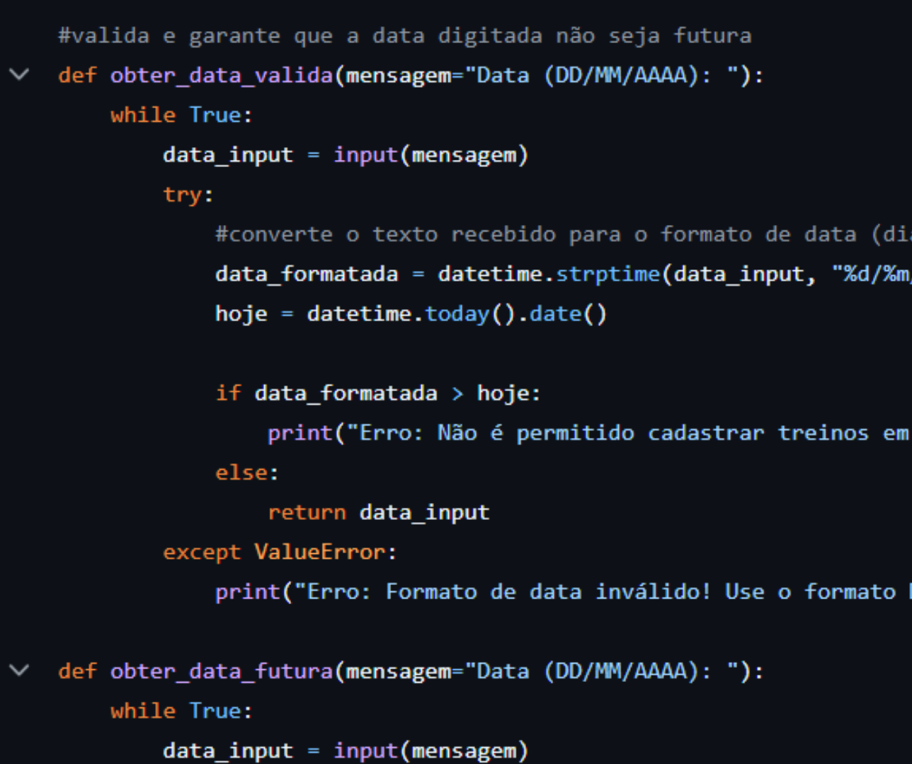

Sistema HYROX
O sistema HYROX foi um projeto acadêmico desenvolvido durante a disciplina de Fundamentos da Programação. O objetivo era criar uma solução capaz de auxiliar atletas na organização de seus treinos e no acompanhamento de seu desempenho ao longo do tempo.
O projeto foi desenvolvido em uma equipe de seis integrantes e representou uma oportunidade importante para aplicar na prática conceitos de programação em Python, além de aprender metodologias de desenvolvimento colaborativo utilizando Git e GitHub.

